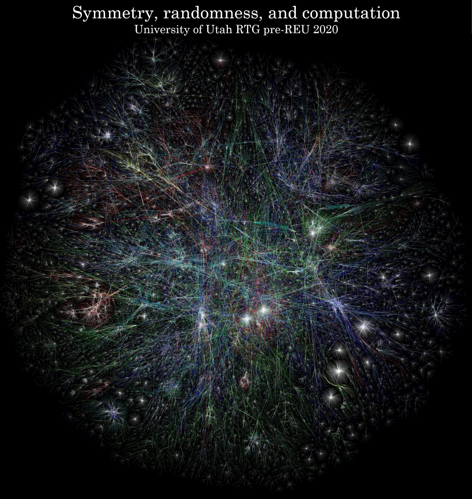

Image source: The Opte Project, Creative Commons Attribution 2.5 Generic license
This progam is over! Here is a link to the 2021 program
when:
May 11 - June 5, 2020
9:15am - 3:30pm daily (Monday - Friday except university holidays)
where:
The University of Utah
who:
(Potential) math majors, especially those finishing their first or second year.
what:
You will explore the basic symmetries of linear equations through applications to random processes, error correcting codes, and other topics. You will work closely with other students and program staff while solving interesting problems and learning to use mathematical software.
stipend:
Participants will be PAID a $2,000 stipend for their participation.
questions:
E-mail howe AT math DOT utah DOT edu